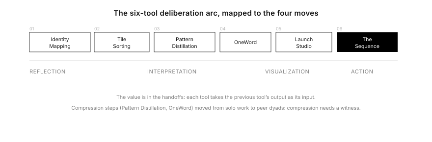
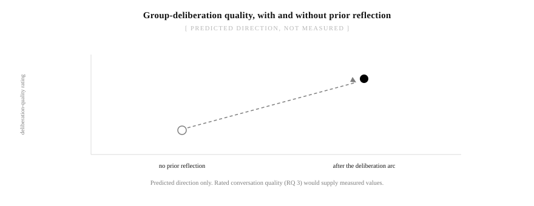

1. Introduction
University career services are typically organized around services, in the operational sense of that word. A student requests a service (resume review, advising appointment, alumni introduction). The service is delivered. The transaction ends. Each interaction is well-bounded and easy to count. The institutional dashboards reflect the count.
The conventional design has the considerable virtue of being legible to the institution that funds it. It has the corresponding limitation of being mismatched to the developmental work students actually need to do. Identity development in undergraduates (Baxter Magolda, 2001) and the narrative construction of vocational meaning (Savickas, 2013; McAdams, 1993) do not happen in discrete service encounters. They happen across months of conversation, reflection, and decision-revision, much of it in cohorts of peers who are doing the same work at the same time.
This paper documents a program built around the second epistemology. The Career Design Lab (CDL), which the author created and ran as its founding manager at Dartmouth College until his role there ended in September 2026, integrated six tools into a single semester-long arc, taken by cohorts of 15 to 30 students. The tools (Identity Mapping Studio, Tile Sorting, Pattern Distillation, OneWord, Launch Studio, and a recursive Sequence framework) are described in detail in Section 4. Each tool was developed and tested independently before being integrated into the program; each term of the program served as a design cycle that produced the revisions to the next term’s program.
The argument I develop has two layers. The first is that the unit of analysis for a developmental career program must be the cohort across a term, not the individual student across a session. The second is that integrating multiple tools into a single program produces effects that no single tool can produce in isolation, because the tools function as moments within a deliberation arc rather than as discrete instruments. Section 2 places this argument in five literatures: deliberation theory, peer-cohort learning, signature pedagogies, narrative identity formation, and design-based research methodology. Section 3 describes the term-by-term research-cycle methodology. Section 4 describes the six tools and the arc that integrates them. Section 5 discusses what the program implies, what its limitations are, and what research lines it opens.
This paper makes three contributions. First, it documents an integrated deliberation arc: six reflection tools sequenced across a semester so that reflection, interpretation, visualization, and action build on one another, rather than a portfolio of disconnected services. Second, it documents a recurring design observation, that compression work appears to benefit from a witness (prompting the shift of Pattern Distillation from solo work to peer dyads), and treats each of the program’s iterations as a research cycle resolving a specific uncertainty. Third, it specifies the empirical agenda the program opens (Section 5.4), stating what evidence would confirm or disconfirm its central claims, including whether individual reflection improves group deliberation. The evidence here is my own facilitator observation across cohorts rather than measured study outcomes, and Section 5 lists what therefore remains undemonstrated.
2. Theoretical Background
2.1 Deliberation Theory and the Distinction Between Opinion and Judgment
The deliberation theory literature provides a useful frame for thinking about what changes when career thinking happens in cohorts rather than in individual advising sessions. James Fishkin’s (2009) work on deliberative democracy demonstrates empirically that structured deliberation produces different (and more considered) conclusions than aggregated individual opinion. Fishkin’s deliberative-polling methodology pre-tests a sample’s opinions, places them in deliberation with each other and with subject-matter experts, and post-tests after the deliberation. The post-test results consistently diverge from the pre-test results in ways that the participants themselves describe as more thought-out.
Daniel Yankelovich’s (1991) earlier work named this distinction directly. He distinguished public opinion, the unprocessed first response to a question, from public judgment, the considered conclusion reached after a period of “working through” in which initial responses are examined, contested, and revised. Yankelovich argued that most polling measures opinion but treats it as judgment, conflating the two in ways that misrepresent what publics actually think when they have had time to think.
The parallel to career development is direct. The first-pass career preferences students bring to an advising appointment are opinions in Yankelovich’s sense, not judgments. They are answers to a question the student has not yet substantively worked on. Conventional career services treat these preferences as inputs, providing services calibrated to them. The deliberation-theory frame suggests instead that the developmental work is the working-through, and the institutional design should support the working-through rather than service the unprocessed preferences. CDL is designed around this alternative.
2.2 The Zone of Proximal Development and Peer Cohorts
Lev Vygotsky’s (1978) framework of the zone of proximal development provides a related justification for the cohort design choice. The zone of proximal development names the distance between what a learner can do independently and what the learner can do with the help of a more knowledgeable other. Vygotsky’s specific insight was that the most productive learning happens within this zone, with appropriate scaffolding, rather than either below it (too easy) or above it (too hard with no scaffolding).
The relevant claim for CDL is that students in a cohort are positioned at slightly different stages of career thinking, and the differences themselves are pedagogically productive. A student who has not yet articulated their values can hear a peer articulate theirs and use the peer’s articulation as scaffolding. A student who has settled prematurely on a career direction can be productively unsettled by a peer who is still exploring. I extend Vygotsky’s framework here in a direction Vygotsky himself did not develop: the “more knowledgeable other” need not be a fixed individual; it can be a distributed function of the cohort, with different peers acting as MKO for different topics and at different moments. Barbara Rogoff’s (1995) work on participatory appropriation and Etienne Wenger’s (1998) framework of communities of practice both develop versions of this distributed-expertise idea, although neither uses the precise formulation I adopt here.
Etienne Wenger’s (1998) Communities of Practice and the earlier Lave and Wenger (1991) Situated Learning together provide the most directly relevant theoretical framework for what CDL is trying to construct at the cohort level. Wenger’s three-part definition of a community of practice (mutual engagement, joint enterprise, shared repertoire) maps neatly onto the cohort’s experience: students in a CDL term are mutually engaged in the same six-tool arc, hold a joint enterprise in their respective career deliberations, and develop a shared repertoire of language and exercises across the term. Lave and Wenger’s (1991) earlier articulation of legitimate peripheral participation names the specific mechanism CDL relies on: the most generative learning in a community of practice happens at the periphery (where new members are negotiating entry into the practice) rather than at the core (where expert practitioners are routinely doing the work). For CDL, the implication is that the program’s developmental effect should be strongest in the early sessions, when students are negotiating entry into the cohort’s emerging shared repertoire, and that the program’s tools should be designed to support this peripheral participation rather than to test for expert mastery.
Stephen Brookfield’s (1995) work on critically reflective teaching extends the Vygotskian frame in a direction directly relevant to CDL. Brookfield articulated the lens of “the peer as mirror”: peers can surface assumptions that the self cannot see in itself, because the peers have not yet internalized those assumptions. The CDL design pairs explicitly on this affordance through the Tile Sorting and Pattern Distillation tools, both of which are structured around peer observation of one’s own materials.
2.3 Signature Pedagogies in the Professions
Lee Shulman’s (2005) framework of signature pedagogies provides the program’s most ambitious theoretical scaffolding. Shulman argued that professions cultivate characteristic teaching practices that define how members of the profession come to think, perform, and act with integrity. Law schools have the case method; medicine has clinical rounds; architecture has the studio crit. Each signature pedagogy combines three components: a surface structure (the observable activity), a deep structure (the assumptions about how learning happens), and an implicit structure (the moral and dispositional commitments transmitted through the practice).
The CDL design aspires to function like a signature pedagogy in Shulman’s sense, while acknowledging that Shulman’s framework was developed to describe pedagogies that have emerged from disciplinary practice over generations rather than designed by single labs over a few semesters. The aspiration is structurally specified: a cohort-based, term-long deliberation arc whose surface structure is the six tools, whose deep structure is the framing of career thinking as a process of identity sensemaking rather than alignment-matching, and whose implicit structure is the commitment that students are the authors of their own career narratives, not the recipients of expert advice about them. Whether the program eventually earns the descriptor signature pedagogy in the Shulman sense is a question that the program cannot answer about itself; the descriptor is conferred by sustained adoption across institutions over time, not by self-application.
The Shulman framework also clarifies why the integration of the six tools matters more than any single tool: a signature pedagogy is a structured practice whose elements work together, a point Section 5.1 takes up.
2.4 Narrative Identity and Self-Authorship as the Developmental Target
The developmental target the program is designed to support comes from two converging literatures already developed in adjacent papers in this series. Dan McAdams’s (1993, 2001) narrative identity theory treats identity as the story a person constructs and continuously edits about who they are and where they are headed. Marcia Baxter Magolda’s (2001) framework of self-authorship treats the developmental endpoint of higher education as the capacity to author one’s own life rather than receive it from external authorities.
Planned happenstance learning theory (Mitchell, Levin, & Krumboltz, 1999) adds a third frame. Krumboltz treats unplanned events as a normal force in career formation and names five dispositions that help people use them: curiosity, persistence, flexibility, optimism, and risk-taking. The CDL’s cohort design is, in part, an instrument for surfacing the unplanned events students have encountered (in their summers, their travels, their classes, their family negotiations) and for practicing the dispositional response to those events in the company of peers.
The CDL program is designed around all three frames. The six tools are structured to support narrative construction (McAdams) by giving students material to construct from, prompts to articulate the construction, and peer audiences to test the construction against. The arc as a whole is designed to support self-authorship (Baxter Magolda) by progressively shifting authority for the work from the program to the student. The final tool in the arc, OneWord, requires the student to compress their own deliberation to a single word they will defend publicly.
2.5 Research Cycles vs. Curricula
The methodological framing for CDL is the design-based research tradition (Brown, 1992; Design-Based Research Collective, 2003), with a specific extension (see also the author’s field note Research cycles, not curricula). A conventional curriculum is fixed at the start of the term and delivered; revisions happen between terms. A research cycle, by contrast, is explicitly revisable within the term, with each iteration of each tool functioning as an instructional event for the student and as a design test for the facilitator, who revised the tool based on how the session went. Anderson and Shattuck (2012) describe iterative refinement in real settings as a characteristic of mature design-based research programs.
CDL was delivered across multiple terms, with changes between iterations recorded in the facilitator’s notes: an exercise was added, two tools’ sequence was swapped, a prompt was reworded after a session went differently than expected. Students were told at the first session that the program was still being refined. In the author’s facilitation notes, most students engaged with this framing and some did not; this was not studied systematically.
3. Method: Term-by-Term Research Cycles
Each CDL term was treated as a single design cycle. The cycle had four phases. Preparation (before the term) consolidated the previous term’s revision list into the next term’s program design. Delivery (during the term) ran the six tools in sequence with the cohort, with session-by-session facilitation notes kept by the author as program lead. Review (end of term) consolidated those facilitation notes into a revision agenda. Revision (between terms) produced the next term’s revision list, prioritizing changes the facilitator’s notes supported and deferring changes that were merely aesthetic.
Scope and method. This is a design-research account of program iteration. The “review” phase described above refers to the instructor’s own notes on program operations, not to formally collected human-subjects research data. No IRB-reviewed protocol was in place; observations are the author’s own program notes, not research data. Observations attributed to “the lab” or to recurring cohort dynamics in Section 5 below are facilitator observations across program cycles, not measured outcomes from an approved study protocol.
This cycle is the unit of methodological analysis. Individual sessions are recorded in the facilitator’s notes within a cycle, not treated as units of analysis themselves. A claim about CDL’s effectiveness, on this methodology, is necessarily a claim across multiple cycles, not within a single cycle. The empirical work the program invites, described in Section 5.4, is therefore necessarily longitudinal across cohorts as well as across the within-cohort timescale.
4. The Career Design Lab System


4.1 The Six-Tool Arc
The program integrates six tools into a single deliberation arc (Figures 1 and 2). The arc moves from expansion (everything the student has done and might do) through organization (recognizing what across that field actually matters), through compression (finding the smallest articulable center of the student’s emerging direction), to commitment (testing a defendable next step). The six tools occupy these stages.

| Tool | Stage | Operation |
|---|---|---|
| Identity Mapping Studio | Expansion | List and sort all experience across four dimensions |
| Tile Sorting | Organization | Card sort with peer observation to surface patterns |
| Pattern Distillation | Organization | Articulate the patterns the sort produced |
| OneWord | Compression | Compress the deliberation to a single defensible word |
| Launch Studio | Commitment | Test a next-step commitment in a structured peer setting |
| The Sequence | Integrator | Recursive framework students can re-run as their experience accumulates |
The arc is the program. No tool functions independently in CDL; each tool is positioned to do work the previous tools have made possible and the subsequent tools will exploit. I describe each tool in turn at the level of design rationale rather than instructional detail.
4.2 Identity Mapping Studio (Tool 1: Expansion)
A facilitated workshop in which cohorts of 15 to 30 students dismantle their own experiences and sort the components across four dimensions: values, strengths, interests, and skills. Students work with physical materials (cards, markers, large-format paper) and build their identity maps in the same room, watching each other’s narratives take shape in real time.
The design rationale is grounded in the deliberation-theory observation (Yankelovich, 1991) that opinion becomes judgment through working-through, and the working-through is more productive in the presence of others doing the same work. The physical-material constraint is deliberate: the friction of moving cards and writing in marker forces a level of commitment that screen-based sorting does not. The 15-to-30 cohort size is calibrated such that the cohort is small enough for students to see each other’s work but large enough to surface heterogeneity in approach.
4.3 Tile Sorting (Tool 2: Organization)
Card-sort exercises drawing on the methodological tradition Rugg and McGeorge (1997) documented for knowledge elicitation, adapted for career-development use. Students sort a deck of value, strength, and interest cards into clusters, then into ranked piles (top 20, top 10, top 5, top 3). The successive compression is itself the work: each round forces a discarding of items that survived the previous round, and the discarding is more revealing of priorities than the keeping.
The peer-observation layer is the design move that distinguishes CDL’s Tile Sorting from off-the-shelf card-sort instruments. Each student’s sort is observed by a peer who has just completed their own. The observing peer asks structured questions about what surprised them in the sort, what felt forced, what was discarded with reluctance. This peer-as-mirror operation (Brookfield, 1995) surfaces patterns the sorting student would not have surfaced alone. The peer cannot replace the student’s own authority over the sort, but the peer can ask the questions the student would not ask themselves.
4.4 Pattern Distillation (Tool 3: Organization)
After Tile Sorting produces the sorted material, Pattern Distillation produces the articulation. Students work in pairs to put into language the patterns their sorts surfaced. The output is a written paragraph, not a list. The pair structure is essential: a student writing alone produces vague abstractions; a student writing for a specific other person produces specific, defensible language.
The design rationale for the writing-with-witness move is the author’s (see also the author’s field note Compression as a method). In the author’s facilitation experience, solo articulation produces material that sounds true to the writer and means little to anyone else; articulation in the presence of an audience produces material that is more uncomfortable for the writer and more useful for everyone. The compression-with-witness pattern recurs across the lab’s projects and is the central design move of the Narrative by Design workshop documented in a separate paper.
4.5 OneWord (Tool 4: Compression)
The cohort has been compressing for weeks by the time it reaches OneWord. The tool’s operation is direct: each student is asked to identify a single word that captures the center of the direction they have been working toward. The word is a decision tool rather than a brand: a temporary center the student will use to evaluate subsequent choices. Does this opportunity I am considering align with my word or against it? is a question the student can answer in two seconds; does this opportunity align with my eighty-page identity map is a question the student cannot answer at all.
The cohort responds to each student’s word in a structured peer-pair format. Each student speaks the word and offers a brief defense; the assigned peer responds with one clarifying question. The exercise is over in approximately five minutes per student. The brevity is the design move: a student cannot hide behind elaboration in five minutes. (I note in passing that an earlier iteration of the program used a fully public cohort-wide defense format; the program moved to the peer-pair format after observing in practice the same dynamics Anthony (1991) documents in the architectural studio jury, in which the public format amplifies performance pressure in ways that work against the developmental purpose. The CDL was then designed to avoid the public-jury dynamic the program’s own Threshold sibling paper critiques in detail.)
4.6 Launch Studio (Tool 5: Commitment)
The OneWord becomes the lens for Launch Studio. Each student names a single next step they would take in the coming term, justified against their word. The step is concrete (apply to specific lab, take specific class, schedule specific informational interview) rather than abstract. The cohort and the program lead respond, focused on whether the step expresses the word or is a default the student has rationalized post-hoc.
The Launch Studio operation is borrowed from the architectural studio crit tradition (Schön, 1985, 1987), which the lab documents at greater length in the separate paper on Threshold. The crit form puts the project, not the person, on the table for evaluation; the student is not on trial, the proposed step is. This separation is what makes the crit form developmentally productive, and it is what Launch Studio borrows.
4.7 The Sequence (Tool 6: Integrator)
The sixth tool is not a discrete session but a framework students can re-run on their own as their experience accumulates. The Sequence makes explicit the meta-pattern the prior five tools have rehearsed: expansion → organization → compression → commitment, repeated as a cycle whenever the student’s circumstances change enough to warrant it. The argument the program makes to its alumni is that the work the program did with them in the cohort is the work they will continue doing for themselves, periodically, for the rest of their working life.
This claim is, in Vincent Tinto’s (1993) terms about academic and social integration into a community, a claim about integration into a practice. The program treats career formation as a lifelong practice that needs a structured introduction, not as a one-time selection problem. The Sequence is the program’s mechanism for transmitting that practice.
- The design predicts higher group-deliberation quality for cohorts that complete the deliberation arc than for sessions without prior individual reflection. How to measure: rate recorded peer-dyad transcripts on a deliberation-quality rubric; two raters, reliability reported; compare with and without the prior arc.
- The design predicts that peer-dyad compression produces more specific outputs than solo compression. How to measure: code each compression output as specific or abstract; compare solo versus peer-dyad conditions.
5. Discussion
Positionality. I designed the Career Design Lab and facilitated it as the program’s instructor. The cohort observations reported here are what I noticed as facilitator across terms; they are not independent or human-subjects measurement. That vantage gave me close, longitudinal knowledge of how the arc behaved with students, and it gives me a stake in the program’s success. Section 5.4 frames the research agenda so that independent parties could test these claims.
5.1 Why Six Tools, Not One Tool Repeated
The design choice to integrate six distinct tools rather than to repeat one well-designed tool reflects the signature-pedagogy frame (Shulman, 2005). A signature pedagogy is a structured combination of elements, each doing different work, that together produce dispositional and intellectual transformation no single element would produce alone. The case method works because the case, the cold call, and the Socratic exchange function together; without any one of them, the others lose their characteristic effect.
The CDL’s six tools function similarly. Identity Mapping Studio without Pattern Distillation would produce a wide map and no articulation. Pattern Distillation without OneWord would produce an articulation and no compression. OneWord without Launch Studio would produce a word and no test. Launch Studio without the Sequence would produce a single tested step and no transferable practice. Each tool is required because each tool does work the others cannot.
5.2 The Peer-Cohort Effect
The Vygotskian framing (Vygotsky, 1978) and the Brookfieldian framing (Brookfield, 1995) both predict that peer presence does developmental work beyond social pleasantness. In the facilitator’s experience across multiple cohorts, the peer effect appeared most strongly in the compression operations (Pattern Distillation, OneWord) and least strongly in the expansion operation (Identity Mapping Studio), which seemed to work nearly as well as a solo exercise. This was not studied systematically.
The asymmetry is consistent with the compression-needs-a-witness idea (see also the author’s field note Compression as a method). In the facilitator’s notes, solo compression tended to produce abstractions and cohort compression tended to produce specifics. The implication for tool design is that not all CDL operations need to be cohort operations; the compression operations do, and the others can be more flexible. A future version of a program like this could use the asymmetry to streamline the expansion phase and concentrate cohort time on the compression operations.
5.3 Limitations of the Current Implementation
The current implementation has limitations the empirical follow-on work would need to address. The program was delivered at a single institution (Dartmouth College) with a specific population (residential undergraduate, mostly traditional age, primarily liberal-arts students). The cohort effects described above may not transfer to part-time, online, or older-adult learner contexts where the cohort itself functions differently.
The longitudinal claim, that the Sequence transmits a practice students continue after the program ends, has not been measured. Alumni-track surveys to assess whether the practice persists were in design but were not deployed before the author’s Dartmouth role ended in September 2026. The program’s effectiveness on conventional career-services metrics (placement rate, time-to-employment) is not the metric the program claims to optimize; comparison against conventional metrics would systematically understate the program by measuring the wrong outcome.
The peer-cohort effect, while described in the facilitator’s notes, has not been studied in a controlled way. A study comparing cohort-delivered CDL against solo-delivered CDL using the same tools is methodologically possible and would test the cohort effect directly; it has not been conducted.
5.4 Open Research Lines
Five lines of inquiry remain open around CDL. Development paused when the author’s Dartmouth role ended in September 2026, so any of them would need a new site, IRB review, and participant consent.
Cohort-vs-solo controlled comparison. The cohort claim is testable. Compare CDL delivered to a cohort against CDL delivered to individual students using the same tools, measuring engagement, completion, and quality of student-produced artifacts.
Longitudinal practice transfer. The Sequence claim is also testable. Alumni surveys at six-month and two-year intervals can measure whether graduates report continuing to use the expansion-organization-compression-commitment cycle in subsequent career decisions.
Cross-institutional portability. The program was refined at Dartmouth across multiple terms. A version of the program at a structurally different institution (a community college, a research university, a tribal college) would test which elements of the program are Dartmouth-specific and which are general.
The compression-with-witness mechanism. The author’s working hypothesis that solo compression produces vague material and pair compression produces specific material is testable through a controlled exercise comparing student writing in solo and pair conditions, run under an approved protocol with participant consent.
Group decision-making outcomes. Research Question 3 in the lab’s broader program asks whether personal reflection improves group decision-making. A program like CDL could test this: cohorts that complete it together could be observed in subsequent group-decision contexts (residence-hall planning, capstone-project formation, club leadership) and compared to control cohorts without it.
5.5 CDL’s Place in the Research Program
The Career Design Lab was the largest in scope of the lab’s prototypes: a term-long program rather than a single tool or workshop. Development paused when the author’s Dartmouth role ended in September 2026. It sits within a broader research program on environments that support reflective work during life transitions. The lab’s five research questions are set out in the framework paper (Looper, 2026f, The Architecture of Becoming); CDL bears on two of them.
CDL most directly addresses RQ1 (the cohort-scale-reflection question) and RQ3 (the personal-reflection-to-group-decision-making question, which the program is well positioned to test because of its cohort composition). Synapse (Looper, 2026a), the lab’s earlier prototype, tests RQ2 through the spatial-map design move. The remaining prototypes, DartWorld (a spatial narrative platform), Narrative by Design (a 90-minute facilitated workshop), and Threshold (a discipline-specific career toolkit for architecture), are documented in companion working reports in the same series. The questions belong to the program as a whole, and each prototype tests some of them. See also the author’s field notes Research cycles, not curricula, Compression as a method, and Environments, not advice, which discuss patterns that recur across several prototypes, including CDL.
5.6 Design Observations Across the Cohorts
The Career Design Lab ran for multiple iterations at Dartmouth College until September 2026. The patterns below are ones I observed repeatedly as program lead and facilitator across those cohorts. They are facilitator observations, not measured outcomes; each is stated as a falsifiable claim that the research agenda in Section 5.4 is built to test under a future consent and review process.

- The handoffs are where the work happens. The arc’s value appears to lie less in any single tool than in the handoffs between them, where each tool takes the prior tool’s output as its input, so a student who skips a step arrives at the next one without the material it assumes.
- Compression appears to need a witness. A recurring observation across iterations (Section 5.2): distilling many experiences into a single word seemed to produce more careful work when witnessed by a peer than when done alone, which moved Pattern Distillation and OneWord from solo work into peer dyads.
- A single anchor carries more than a long profile. The OneWord compression step, reducing the material to one anchor, appeared to give students something more usable for subsequent decisions than the longer profiles produced earlier in the arc.
- Each term was a design cycle, not a re-run. Treating every offering as an iteration that resolves a specific uncertainty let the arc change shape across successive versions.
6. Conclusion
The argument across this paper has been that university career programs are structurally mismatched to the developmental work they are asked to support, because the conventional service-delivery model operates on the wrong unit of analysis (the individual session) and the developmental work happens on a different scale (the cohort across a term). I described the Career Design Lab as a design response: a term-long program integrating six tools into a single deliberation arc, taken by cohorts of 15 to 30 students at Dartmouth College, developed iteratively across multiple research cycles using a design-based research methodology.
A second claim is that career formation, given a serious institutional commitment, is amenable to becoming a signature pedagogy of undergraduate education in Lee Shulman’s sense: a structured practice with distinctive surface, deep, and implicit elements that transforms students’ dispositional relationship to their own careers, not merely their factual knowledge about them. CDL was one attempt to develop such a pedagogy. The design pattern, a cohort-based deliberation arc built from structured tools, is not tied to that one program.
I would welcome partners for the open research lines in Section 5.4, in particular learning-sciences and career-development research programs able to run the longitudinal and cross-institutional studies. Contact: seth.looper@gmail.com.